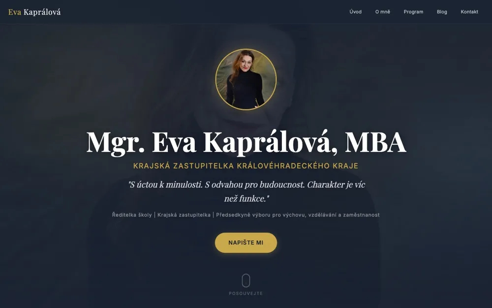
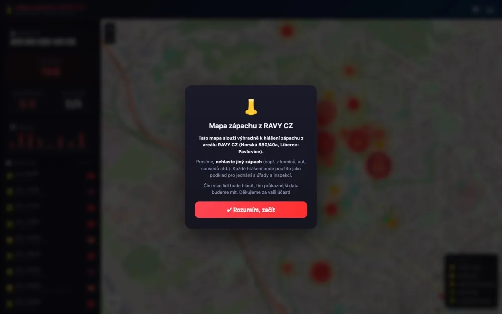
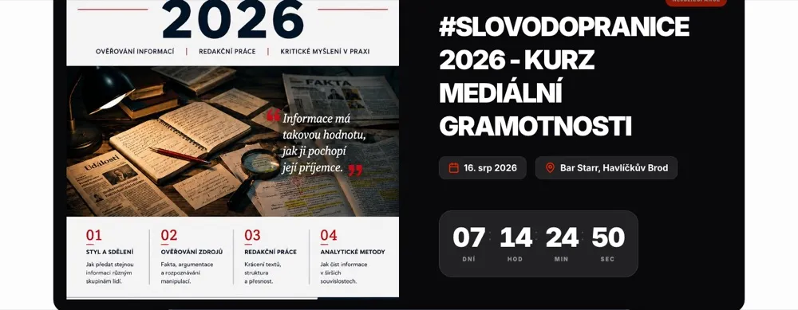
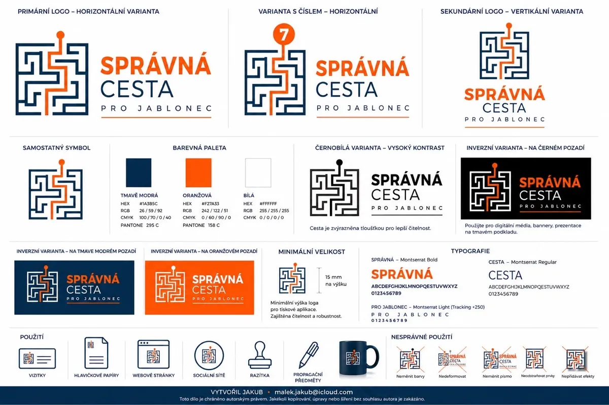
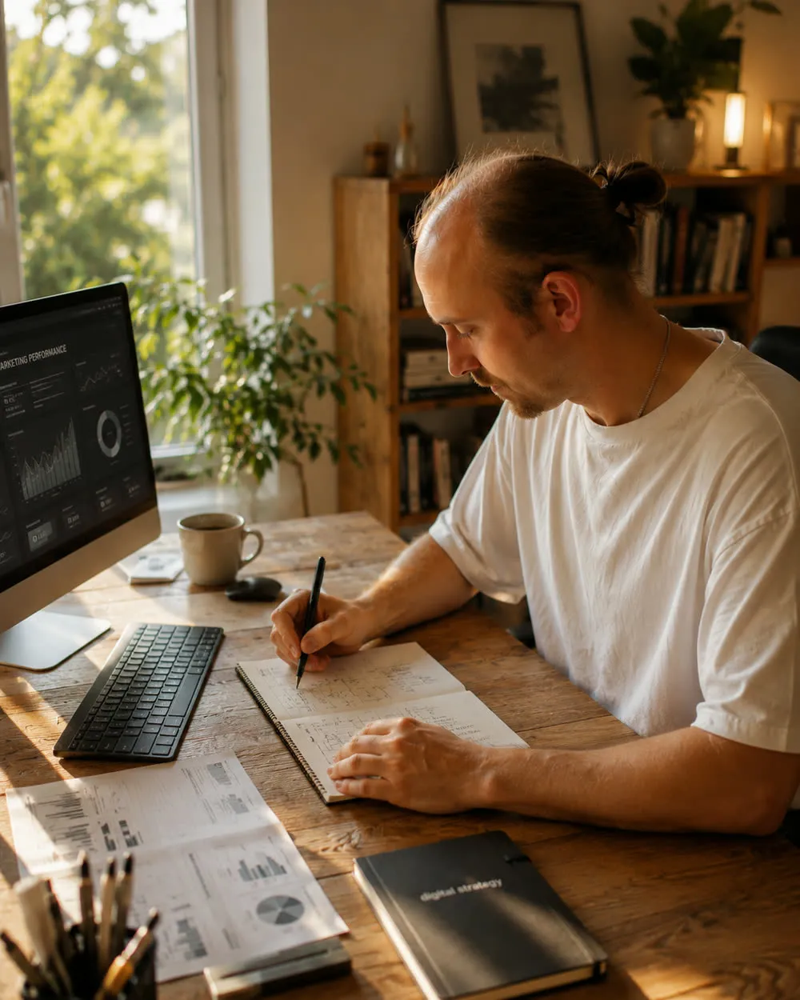

Váš web by měl prodávat,
ne jen hezky vypadat.
Tvorba webových stránek na míru v Liberci a okolí. Web, obsah, SEO a viditelnost v AI — bez agenturní mlhy.
- ✓ Obsah a struktura
- ✓ Návrh a design
- ✓ Kód a publikace
- ✓ Zaškolení
Všechno, co potřebujete, aby vás lidi našli a vybrali si vás.
Web na míru
Postavím web od nuly, přesně podle toho, co potřebujete. Nejdřív si popovídáme, pak teprve kódím. Žádné šablony, žádné „tohle by se vám mohlo líbit".
14 900–24 500 Kč · jednostránkový web do 5–7 dní, větší do 2–3 týdnůSpráva sítí
Píšu a plánuju příspěvky za vás, vy se věnujete práci. Profil žije, vy nemusíte.
4 900–7 500 Kč/měsícÚdržba webu
Aktualizace, zálohy, drobné opravy. Aby vám web nespadl zrovna ve chvíli, kdy ho potřebujete.
1 900 Kč/měsícViditelnost v AI a ChatGPT
Lidi se dnes ptají ChatGPT, koho si vybrat. Upravím web tak, aby AI lépe rozuměla, kdo jste a co děláte — a měla vás z čeho doporučit.
3 900–6 500 KčAutomatizace
Opakující se práce, kterou děláte ručně. Necháme to běžet za vás.
individuálněFoto obsah na míru
Nafotím vaši provozovnu, vás a vaši práci. Žádné stock fotky — web, který vypadá jako vy, buduje důvěru.
3 900–5 900 KčKonkrétní projekty, konkrétní výsledky. Zeptejte se klientů.

Eva Kaprálová
Krajská zastupitelka, ředitelka školy, aktivní kampaň. Web s administrací, blog, správa sítí a digitální podpora.

liberec.online
Mapování zápachu z výrobního areálu — lidé se zapojují, data jdou za úřady. Propojení občanů, radnice a SVJ.

Kalendář alternativy
Akce, debaty a besedy s profily osobností, časovou osou, galerií a sdílením na sítě.

Správná Cesta Pro Jablonec
Logo, barvy, typografie a celý systém — od vizitek po sociální sítě. Web se připravuje a bude brzy zveřejněn.

Jeden člověk, jedna práce.
Celý život se pohybuju mezi lidmi a technikou. Dělám weby, sítě a automatizace pro lidi, kteří nemají čas ani chuť řešit, jak to celé funguje — chtějí, aby to prostě fungovalo.
Nejsem agentura. Nevoláte do call centra, nikdo vás nepřepojuje mezi odděleními. Jsem jeden člověk, kterému na vašem webu záleží, protože je na něm moje jméno.
Občas to stojí víc času, než jsem plánoval. Občas si říkám, že jsem si mohl vybrat jednodušší práci. Ale když web běží a klient je spokojený, tak to za to stojí. To jsem zase já.
Liberec a okolí. Osobně, nebo online — jak vám to vyhovuje.
Žádné schovávání. Víte, za co platíte, ještě než se zeptáte.
| Služba | Co dostanete | Cena |
|---|---|---|
| Jednostránkový web | Návrh, texty, tvorba, nasazení | od 14 900 Kč |
| Web na míru (3–5 stránek) | Návrh, texty, tvorba, nasazení, zaškolení | od 18 500 Kč |
| Web pro profesionály (5–7 stránek) | Vše výše + struktura, SEO základy | od 24 500 Kč |
| Správa sociálních sítí | 8–12 příspěvků měsíčně + grafika + reporting | od 4 900 Kč/měs. |
| Údržba webu | Aktualizace, zálohy, drobné úpravy, dohled | od 1 900 Kč/měs. |
| Viditelnost v AI (GEO) | Audit + úprava webu, aby mu AI chatboty lépe rozuměly a měly vás z čeho doporučit | od 3 900 Kč |
| Automatizace | Analýza, návrh, implementace, dokumentace | individuálně |
| Firemní focení | Provozovna + portrét + produkt, 20–60 upravených fotek, licence na web a sítě | 3 900–5 900 Kč |
| Web + focení (balíček) | Web na míru + focení provozovny a portrétu — vše od jednoho člověka | od 17 800 Kč (sleva 1 000 Kč) |
Ceny jsou konečné — nejsem plátce DPH, takže se k nim nic nepřičítá. Konkrétní nabídku připravím zdarma po krátké konzultaci — řekněte, co potřebujete, a já řeknu, kolik to stojí a za jak dlouho to bude.
Čtu, píšu a vysvětluju. Ať víte, do čeho jdete.
Kolik stojí web v roce 2026?
Reálné ceny, co je ovlivňuje a proč „levný web" stojí nejvíc.
Přečíst článek →Web pro advokáta
Povinné údaje dle ČAK, co nesmí a jak přináší klienty.
Přečíst článek →Co je GEO a proč na něm záleží?
Jak AI vybírá firmy a proč vás ChatGPT možná nedoporučí.
Přečíst článek →Ztracené poptávky = ztracené provize
Proč web makléře vydělává a jak proměnit návštěvníky v poptávky.
Přečíst článek →Web v Liberci
Proč Facebook nestačí a jak vás najdou místní (i přes AI).
Přečíst článek →Web pro politika
Osobní značka, která přežije volby. Web za 5 dní (case study).
Přečíst článek →Web pro autoservis
Jak získat zákazníky, kteří tě hledají. Know-how z prostředí.
Přečíst článek →Správa sítí pro firmy
Proč to nejde dělat „když zbude čas" a kolik to stojí.
Přečíst článek →GEO audit v 5 krocích
Zjistěte za 15 minut, co z vašeho webu vidí AI.
Přečíst článek →Jak vybrat webdesignéra
8 otázek, než někomu svěříte web. Kontrolní seznam.
Přečíst článek →Web pro kavárnu a restauraci
Menu online, rezervace, fotky. Instagram nestačí.
Přečíst článek →Jak napsat texty na web
5 pravidel pro necopywritery. Příklady před a po.
Přečíst článek →Proč stock fotky škodí vašemu webu
AI i zákazníci poznají univerzální obrázky. Jak vypadat věrohodně.
Přečíst článek →Časté otázky. Odpovídám rovnou, ať se nemusíte ptát.
Kolik stojí web na míru?
Jednostránkový web od 14 900 Kč, web na míru (3–5 stránek) od 18 500 Kč a web pro profesionály (5–7 stránek) od 24 500 Kč. Ceny jsou konečné — nejsem plátce DPH, takže se k nim nic nepřičítá.
Za jak dlouho bude web hotový?
Jednostránkový web do 5–7 dní, menší web do 2 týdnů, rozsáhlejší do 3 týdnů. Nejkratší dodání: 5 dní.
Co je viditelnost pro AI (GEO)?
Lidé se dnes ptají ChatGPT a jiných AI chatbotů, koho si vybrat. GEO (Generative Engine Optimization) upraví web tak, aby ho AI správně pochopila a doporučovala — strukturovaná data, čitelný obsah, metadata.
Jak probíhá spolupráce?
Nejdřív si nezávazně popovídáme o tom, co potřebujete, a připravím konkrétní nabídku zdarma. Po odsouhlasení web postavím, nasadím a zaškolím vás.
Děláte weby jen v Liberci?
Působím v Liberci a okolí, ale pracuji i online pro klienty z celé České republiky.
Nabízíte i focení?
Ano — nafotím provozovnu, portrét nebo produkt přímo pro váš web a sociální sítě. Firemní focení stojí 3 900–5 900 Kč, v balíčku s webem dostanete slevu 1 000 Kč. Fotky jsou v ceně upravené a s licencí na web i sítě.
Nezávazně si sedneme a projdeme, co potřebujete.
Klidně přes telefon, klidně osobně. Když si nesedneme, nic se neděje — aspoň budete vědět, na co se ptát dál.